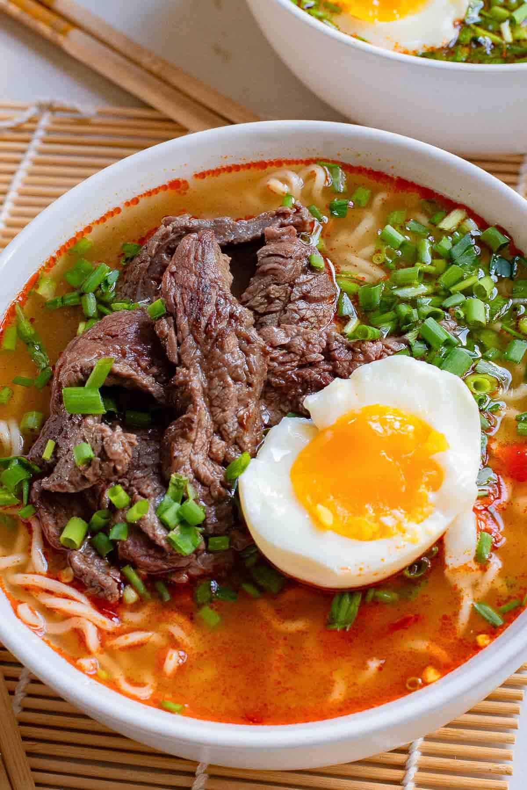

Korean Ramen
Home

In this recipe, rich broth, chewy noodls, and flavorful toppings come together
to create a comforting and satisfying meal that will warm you up on a cold day.
Whether you're a ramen enthusiast or new to Korean cuisine, this recipe is sure to become a favorite in your kitchen.
It"s a cozy, comforting meal that also delivers a kick of spice and excitement.
The first spoonful may surprise you with its fiery hit of chili pepper heat,
but it’s balanced out by the sweet and nutty notes. Before you know it,
you’ll be slurping up every last drop of the addictive broth.
Equipment Needed
- Medium saucepan
- Cutting board
- Knife
- Measuring cups and spoons
- Wooden Spoon
- Colander or strainer
- Bowls for serving
Optional: skillet for extra browning
Ingredients
- 1 package Korean ramen noodles
- 1 tablespoon sesame seed oil
- 1 small onion, diced
- 2 cloves garlic, minced
- 1 cup diced cook chicken
- 1 tablespoon Gochujang
- 1 tablespoon soy sauce
- 1 teaspoon sugar
- Salt and pepper
- Boil water in the saucepan, add noodles, and cook 2-3 minutes. Drain and set aside.
- In the saucepan, heat sesame oil. Add diced onions and cook 2-3 minutes, then add minced garlic and cook 1 minute.
- Add cooked chicken and cook 1 minute
- Add Gochujang, soy sauce, and sugar. Stir well and cook 1 minute.
- Add cooked noodles, stir to combine, season with salt and pepper